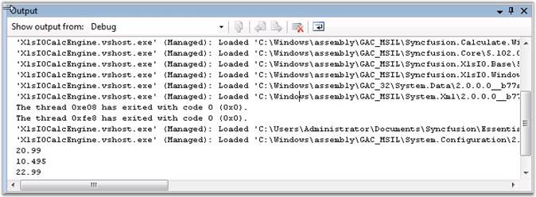
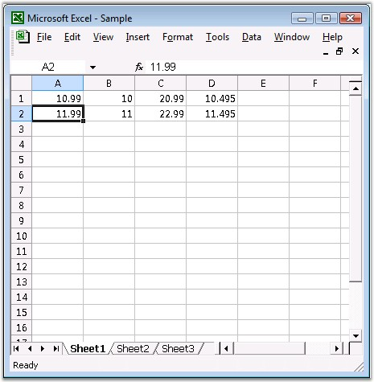

Enable Formula Calculations:
Essential XlsIO includes support for enabling the calculations of Essential Calculate supported formulas that are added at runtime to the worksheet and the computed value will be set to the “CalculatedValue” property associated to the “IRange” object. The following code snippet illustrates how to enable the sheet formula calculations.
|
[C#] IWorksheet sheet = workbook.Worksheets[0]; //Formula calculation is enabled for the sheet. sheet.EnableSheetCalculations(); string computedValue = sheet.Range["C1"].CalculatedValue; |
Disable Formula Calculations:
Essential XlsIO will be able to disable the calculations of Essential Calculate supported formulas that are added at runtime to the worksheet. The following code snippet illustrates how to disable the sheet formula calculations.
|
[C#] IWorksheet sheet = workbook.Worksheets[0]; //Formula calculation is enabled for the sheet. sheet.DisableSheetCalculations(); |
Here are some code samples, to evaluate some formulas entered by using Essential XlsIO during runtime. The XlsIO computed value is identical to the values computed by using MS Excel.
|
[C#]
//Inserting sample text into the first cell of the first worksheet. sheet.Range["A1"].Number = 10.99; sheet.Range["B1"].Number = 10; sheet.Range["C1"].Formula = "A1+B1"; sheet.Range["D1"].Formula = "AVERAGE(A1:B1)";
//Formula calculation is enabled for the sheet. sheet.EnableSheetCalculations();
Console.WriteLine(sheet.Range["C1"].CalculatedValue.ToString(), sheet.Range["C1"].Formula); Console.WriteLine(sheet.Range["D1"].CalculatedValue.ToString(),sheet.Range["D1"].Formula);
//Add more data sheet.Range["A2"].Number = 11.99; sheet.Range["B2"].Number = 11; sheet.Range["C2"].Formula = "A2+B2"; sheet.Range["D2"].Formula = "AVERAGE(A2:B2)";
Console.WriteLine(sheet.Range["C2"].CalculatedValue.ToString(),sheet.Range["C2"].Formula); Console.WriteLine(sheet.Range["D2"].CalculatedValue.ToString(),sheet.Range["D2"].Formula); |
|
[VB.NET]
' Inserting sample text into the first cell of the first worksheet. sheet.Range("A1").Number = 10.99 sheet.Range("B1").Number = 10 sheet.Range("C1").Formula = "A1+B1" sheet.Range("D1").Formula = "AVERAGE(A1:B1)"
' Formula calculation is enabled for the sheet. sheet.EnableSheetCalculations() Console.WriteLine(sheet.Range("C1").FormulaNumberValue.ToString(),sheet.Range("C1").Formula) Console.WriteLine(sheet.Range("D1").FormulaNumberValue.ToString(),sheet.Range("D1").Formula)
' Add more data. sheet.Range("A2").Number = 11.99 sheet.Range("B2").Number = 11 sheet.Range("C2").Formula = "A2+B2" sheet.Range("D2").Formula = "AVERAGE(A2:B2)"
Console.WriteLine(sheet.Range("C2").FormulaNumberValue.ToString(),sheet.Range("C2").Formula) Console.WriteLine(sheet.Range("D2").FormulaNumberValue.ToString(),sheet.Range("D2").Formula) |

Figure 121: Output Box in Visual Studio

Figure 122: XlsIO with XlsIO CalcEngine
 Note:
Note:
1 In order to use the Essential XlsIO's Calculate engine, you have to add the following namespace:
· using Syncfusion.Calculate
2 Do not add reference to Syncfusion.Calculate.Base. It will throw conflict errors as these are already integrated with XlsIO from Version 7.2.X.X.
3 Only the formulas that are supported by Calculate engine can be calculated at runtime using Essential XlsIO.